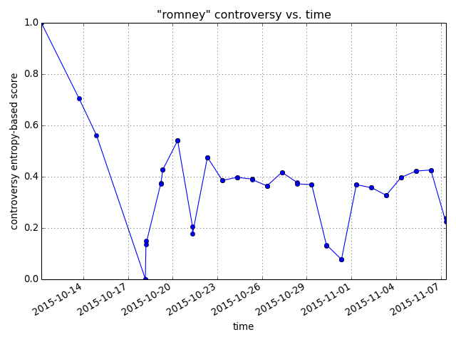

You must be logged in to query any of these endpoints.
GET /api?q=syria
1 { 2 "keyword": "clinton", 3 "ok": 1, 4 "result": [ 5 { 6 "abstract": "At a time when liberals are ascendant in the party, some Democrats believe Hillary Rodham Clinton\u2019s time representing Wall Street as a senator could become a vulnerability.", 7 "byline": "By PATRICK HEALY", 8 "comments": [ 9 { 10 "abuseFlag": null, 11 "clean": "Good article. I am glad to see the NYT covering this. Although this article did not mention the $25 million of \"speaking fees\" that Clinton accepted just in 2014. Most of the money she as to her name, she got from rich people who paid her to talk. Does anyone really believe that she earned millions of dollars for just talking for an hour? The \"speaking fees\" are legalized bribes!", 12 "dirty": "Good article. I am glad to see the NYT covering this. Although this article did not mention the $25 million of \"speaking fees\" that Clinton accepted just in 2014. Most of the money she as to her name, she got from rich people who paid her to talk. Does anyone really believe that she earned millions of dollars for just talking for an hour? The \"speaking fees\" are legalized bribes!", 13 "is_negative": false, 14 "is_positive": true, 15 "n_recommendations": 0, 16 "n_replies": 0, 17 "sentiment": 1, 18 "ts": "1448236950", 19 "userLocation": "MI" 20 }, ... 21 ], 22 "full": "John Wittneben simmered as he listened to Hillary Rodham Clinton defend her ties to Wall Street during last weekend\u2019s Democratic debate. He lost 40 percent of his savings in individual retirement accounts during the Great Recession, while Mrs. Clinton has received millions of dollars from the kinds of executives he believes should be in jail. \u201cPeople knew what they were doing back then, because of greed, and it caused me harm,\u201d said Mr. Wittneben, the Democratic chairman in Emmet County, Iowa. \u201cWe were raised a certain way here. Fairness is a big deal.\u201d The next day he endorsed Senator Bernie Sanders in the presidential race. Mrs. Clinton\u2019s windfalls from Wall Street banks and other financial services firms \u2014 $3 million in paid speeches and $17 million in campaign contributions over the years \u2014 have become a major vulnerability in states with early nomination contests. Some party officials who remain undecided in the 2016 presidential race see her as overly cozy with big banks and other special interests. At a time when liberals are ascendant in the party, many Democrats believe her merely having \u201crepresented Wall Street as a senator from New York,\u201d as Mrs. Clinton reminded viewers in an October debate, is bad enough. It is an image problem that she cannot seem to shake. Though she criticizes the American economy as being \u201crigged\u201d for the rich, Mrs. Clinton has lost some support recently from party members who think she would go easy on Wall Street excess if elected. Even as she promises greater regulation of hedge funds and private equity firms, liberals deride her for refusing to support reinstatement of the Glass-Steagall Act, a law that separated commercial and investment banks until its repeal under President Bill Clinton. (Mr. Sanders favors its restoration.) And for many Democrats, her strong support from wealthy donors and a big-money \u201csuper PAC\u201d undercuts her increasingly progressive rhetoric on free trade and other economic issues. Her advisers say most Democrats like her economic policies and believe she would fight for middle-class and low-income Americans. Most opinion polls put Mrs. Clinton well ahead of Mr. Sanders nationally and in Iowa, and they are running even in New Hampshire, but she fares worse than him on questions about taking on Wall Street and special interests. And even if Mrs. Clinton sews up the nomination quickly, subdued enthusiasm among the party\u2019s liberal base could complicate efforts to energize Democratic turnout for the general election. In the primaries, Mrs. Clinton\u2019s advisers privately concede that she will lose some votes over her Wall Street connections. They declined to share specific findings from internal polls, but predicted the issue could resonate in Democratic contests in Iowa, Nevada, Ohio and Michigan, where many have lost homes and businesses to bank foreclosures. Mr. Sanders zeros in on Wall Street donations to Mrs. Clinton in an aggressive new television commercial that started running in Iowa and New Hampshire on Saturday: \u201cThe truth is, you can\u2019t change a corrupt system by taking its money,\u201d he warns. One of Mrs. Clinton\u2019s most prominent supporters in Ohio, former State Senator Nina Turner, defected to Mr. Sanders this month in part, she said, because she felt he would be tougher on special interests. And some Democratic superdelegates, whose backing is crucial, said Mrs. Clinton\u2019s ties to big banks, and her invocation of 9/11 to defend her ties to Wall Street at the Nov. 14 debate, only made them further question her independence from the financial industry. \u201cMy parents had a saying in Spanish \u2014 \u2018Dime con qui\u00e9n andas y te dir\u00e9 qui\u00e9n eres\u2019 \u2014 which means, \u2018Tell me who you\u2019re hanging with and I\u2019ll tell you who you are,\u2019\u201d said Alma R. Gonzalez, an uncommitted superdelegate from Florida. \u201cA lot of my Democratic friends feel that way about Hillary and Wall Street. \u201cAre the working people in this country going to be able to count on hard decisions being made by President Hillary Clinton with regard to her Wall Street chums?\u201d Ms. Gonzalez continued. \u201cWill she be another President Clinton who appoints a Treasury secretary from Wall Street? These are major concerns.\u201d Indeed, Mr. Clinton\u2019s close relationships with Wall Street executives like Robert E. Rubin of Goldman Sachs, whom he named his Treasury secretary, and his support for undoing parts of Glass-Steagall have contributed to misgivings about Mrs. Clinton. Mrs. Clinton has proposed imposing risk fees on unwieldy big banks and empowering regulators to break them up if necessary \u2014 though this is not the wholesale breakup that Mr. Sanders favors under a return of Glass-Steagall. She also proposes to make sure fines for corporate wrongdoing hit executive bonuses, and to pursue criminal prosecutions when justified. On Saturday, Mrs. Clinton discussed her plans for regulating the financial industry, at a Democratic rally in North Charleston, S.C., where she spoke after Mr. Sanders and another candidate, former Gov. Martin O\u2019Malley of Maryland. \u201cI have the toughest, most comprehensive proposals for dealing with Wall Street,\u201d she began, and a voter holding a \u201cBernie\u201d sign interrupted, \u201cBy taking their money!\u201d Mrs. Clinton continued, saying her plan would address not just Wall Street banks, but also insurance companies and the \u201cshadow banking\u201d industry of hedge funds and private equity firms. \u201cI am willing to break up the big banks, if they need to be broken up,\u201d she added. Yet even though she has taken tough stands in the past, such as chastising banks for widespread foreclosures in 2007 and 2008, some Democrats are skeptical that she would ever crack down hard on the executives in her social circles in Manhattan, the Hamptons and Washington. Jake Quinn, an uncommitted superdelegate from North Carolina, said he was concerned about Mrs. Clinton\u2019s willingness to clamp down on Wall Street malfeasance. \u201cThe financial sector\u2019s ongoing relative lack of accountability makes me suspicious of any candidate who sources it for significant support,\u201d he said. Mrs. Clinton\u2019s advisers say that any political harm resulting from her Wall Street ties will be minimal because she never took action in exchange for donations and that her proposals discredit claims that she would protect banks as president. The advisers also play down the possibility that Mrs. Clinton will face problems with voter enthusiasm and turnout if she is nominated. While Mr. Sanders and Mr. O\u2019Malley have argued that big donors inevitably had influence with her, her campaign has pushed back against suggestions that the financial services industry has bankrolled her campaign. Her aides also said ads by a new group, Future 45, attacking Mrs. Clinton would underscore her independence, because the group\u2019s major donors include Wall Street magnates like Paul Singer. \"When billionaire hedge fund managers are forming super PACs to run ads attacking her, it\u2019s clear they fear she will take action as president to crack down on the industry\u2019s abuses,\" said Brian Fallon, a Clinton campaign spokesman. Bashing Wall Street is not an automatic win for Mr. Sanders, however. Ms. Gonzalez, the Florida superdelegate, and some other undecided Democrats said they viewed Mr. Sanders as too hostile to banks and corporations and too divisive in his remarks about American wealth. But others said they were more concerned that Mrs. Clinton had not broken with Wall Street in a clear way, noting the lengths she went to at the debate to explain the relationship. \u201cShe was waving the bloody shirt of 9/11 to defend herself, which we\u2019re accustomed to seeing with demagogues on the right, and it just didn\u2019t feel quite right,\u201d said Kurt Meyer, a co-chairman of the Mitchell County Democrats in Iowa, who has not endorsed a candidate. \u201cShe connected two things, 9/11 and her ties to Wall Street, that I didn\u2019t like her sewing together.\u201d Ms. Turner, the former Ohio lawmaker, said the blocks of foreclosed homes in Cleveland were a painful reminder that banks prioritize their own corporate interests. Mr. Sanders has been criticizing \u201cthe corrupt economy symbolized by Wall Street greed\u201d for decades, she said. \u201cHe shows righteous indignation and speaks for the common woman and man in saying they have a right to be outraged at Wall Street,\u201d Ms. Turner said. \u201cHe doesn\u2019t just talk the talk. He walks the talk.\u201d And Mrs. Clinton? \u201cHer ties are her ties,\u201d Ms. Turner said.", 23 "lead": "At a time when liberals are ascendant in the party, some Democrats believe Hillary Rodham Clinton\u2019s time representing Wall Street as a senator could become a vulnerability.", 24 "linguistic_score": 109.79326659822776, 25 "published": "2015-11-22", 26 "score": 153.78719125576572, 27 "sentences": [ 28 { 29 "linguistic_score": 3.2169171866886996, 30 "score": 4.390660392428369, 31 "sentiment_score": 1.1737432057396702, 32 "text": "He lost 40 percent of his savings in individual retirement accounts during the Great Recession, while Mrs. Clinton has received millions of dollars from the kinds of executives he believes should be in jail.", 33 "tweets": [ 34 { 35 "author": "KWQCAshley", 36 "clean": ". says \"It's great to be back in Clinton\"", 37 "dirty": ".@HillaryClinton says \"It's great to be back in Clinton\" @kwqcnews https://t.co/k5EWWM9Iej", 38 "followers": 1129, 39 "identifier": 668595626041606144, 40 "is_negative": false, 41 "is_positive": true, 42 "location": "Davenport, IA", 43 "n_statuses": 6717, 44 "pimg": "http://pbs.twimg.com/profile_images/658138092822360069/B4c3knyO_normal.png", 45 "retweeted": false, 46 "retweets": 0, 47 "sentiment": 1, 48 "time_zone": "Central Time (US & Canada)", 49 "ts": "Mon Nov 23 01:03:13 +0000 2015" 50 }, ... 51 ] 52 }, ... 53 ] 54 } 55 ] 56 }
Where score is the score (defined in the IEEE paper) for an article or keyword. It's the sum of the sentiment and lingustic scores.
GET /api/user-history. It's only possible to query the currently-signed-in user's history, so no arguments.
1 { 2 "error": 0, 3 "result": { 4 "queries": [ 5 { 6 "Performed": "Tue, 20 Oct 2015 18:30:12 GMT", 7 "Term": "clinton" 8 }, 9 { 10 "Performed": "Tue, 20 Oct 2015 18:30:31 GMT", 11 "Term": "bush" 12 }, 13 { 14 "Performed": "Tue, 27 Oct 2015 18:58:16 GMT", 15 "Term": "obama" 16 }, 17 { 18 "Performed": "Tue, 27 Oct 2015 19:00:02 GMT", 19 "Term": "iraq" 20 }, 21 { 22 "Performed": "Tue, 27 Oct 2015 19:03:57 GMT", 23 "Term": "afghanistan" 24 }, 25 { 26 "Performed": "Wed, 28 Oct 2015 02:37:38 GMT", 27 "Term": "baltimore" 28 }, 29 { 30 "Performed": "Wed, 28 Oct 2015 02:52:47 GMT", 31 "Term": "new york" 32 }, 33 { 34 "Performed": "Wed, 28 Oct 2015 02:53:56 GMT", 35 "Term": "new york city" 36 }, 37 { 38 "Performed": "Wed, 28 Oct 2015 03:22:28 GMT", 39 "Term": "iran" 40 }, 41 { 42 "Performed": "Wed, 28 Oct 2015 03:24:13 GMT", 43 "Term": "stanford" 44 }, 45 { 46 "Performed": "Wed, 28 Oct 2015 13:49:12 GMT", 47 "Term": "princeton" 48 }, 49 { 50 "Performed": "Wed, 28 Oct 2015 16:19:07 GMT", 51 "Term": "greece" 52 }, 53 { 54 "Performed": "Wed, 28 Oct 2015 17:17:06 GMT", 55 "Term": "germany" 56 }, 57 { 58 "Performed": "Wed, 28 Oct 2015 17:26:48 GMT", 59 "Term": "hungary" 60 }, 61 { 62 "Performed": "Wed, 28 Oct 2015 18:00:53 GMT", 63 "Term": "austria" 64 }, 65 { 66 "Performed": "Wed, 28 Oct 2015 21:43:20 GMT", 67 "Term": "putin" 68 }, 69 { 70 "Performed": "Tue, 10 Nov 2015 18:30:26 GMT", 71 "Term": "illinois" 72 }, 73 { 74 "Performed": "Tue, 10 Nov 2015 18:31:39 GMT", 75 "Term": "prince" 76 }, 77 { 78 "Performed": "Wed, 11 Nov 2015 17:46:35 GMT", 79 "Term": "romney" 80 }, 81 { 82 "Performed": "Wed, 11 Nov 2015 17:48:23 GMT", 83 "Term": "african" 84 }, 85 { 86 "Performed": "Wed, 11 Nov 2015 17:50:38 GMT", 87 "Term": "hulu" 88 }, 89 { 90 "Performed": "Wed, 11 Nov 2015 18:12:59 GMT", 91 "Term": "ron paul" 92 }, 93 { 94 "Performed": "Sat, 21 Nov 2015 18:42:05 GMT", 95 "Term": "AIDs" 96 }, 97 { 98 "Performed": "Sat, 21 Nov 2015 18:50:27 GMT", 99 "Term": "isis" 100 }, 101 { 102 "Performed": "Sat, 21 Nov 2015 18:56:29 GMT", 103 "Term": "syria" 104 }, 105 { 106 "Performed": "Sat, 21 Nov 2015 18:57:57 GMT", 107 "Term": "hillary" 108 }, 109 { 110 "Performed": "Sat, 21 Nov 2015 19:00:40 GMT", 111 "Term": "hillary clinton" 112 }, 113 { 114 "Performed": "Mon, 23 Nov 2015 11:23:42 GMT", 115 "Term": "hippo" 116 } 117 ] 118 } 119 }
GET /api/trend
1 { 2 "error": 0, 3 "result": { 4 "controversial": [ 5 { 6 "EntropyScore": 2689.61, 7 "Term": "clinton" 8 }, 9 { 10 "EntropyScore": 2005.47, 11 "Term": "bush" 12 }, 13 { 14 "EntropyScore": 1580.31, 15 "Term": "putin" 16 }, 17 { 18 "EntropyScore": 1359.08, 19 "Term": "romney" 20 }, 21 { 22 "EntropyScore": 1174.0, 23 "Term": "hungary" 24 }, 25 { 26 "EntropyScore": 1125.78, 27 "Term": "syria" 28 } 29 ], 30 "top-5": [ 31 "clinton", 32 "hippo", 33 "romney", 34 "austria", 35 "greece" 36 ], 37 "trending": { 38 "AIDs": 3.571428571428571, 39 "afghanistan": 3.571428571428571, 40 "african": 3.571428571428571, 41 "austria": 3.571428571428571, 42 "baltimore": 3.571428571428571, 43 "bush": 3.571428571428571, 44 "clinton": 3.571428571428571, 45 "germany": 3.571428571428571, 46 "greece": 3.571428571428571, 47 "hillary": 3.571428571428571, 48 "hillary clinton": 3.571428571428571, 49 "hippo": 3.571428571428571, 50 "hulu": 3.571428571428571, 51 "hungary": 3.571428571428571, 52 "illinois": 3.571428571428571, 53 "iran": 3.571428571428571, 54 "iraq": 3.571428571428571, 55 "isis": 3.571428571428571, 56 "new york": 3.571428571428571, 57 "new york city": 3.571428571428571, 58 "obama": 3.571428571428571, 59 "prince": 3.571428571428571, 60 "princeton": 3.571428571428571, 61 "putin": 3.571428571428571, 62 "romney": 3.571428571428571, 63 "ron paul": 3.571428571428571, 64 "stanford": 3.571428571428571, 65 "syria": 3.571428571428571 66 } 67 } 68 }
Where ['result']['trending'] is a key-value pair list where the key is the query and the value is the amount of search traffic towards that query. ['result']['top-5'] is a ranked list of the most popular queries. top-5 will always be a (non-proper) subset of trending.
/api/trend/<k>. Where <k> is an element of /api/trend's trending list (a keyword that's been searched for before).
1 { 2 "error": 0, 3 "result": [ 4 { 5 "EntropyScore": 1359.08, 6 "Performed": "Tue, 13 Oct 2015 16:45:51 GMT" 7 }, 8 { 9 "EntropyScore": 488.701, 10 "Performed": "Wed, 11 Nov 2015 17:46:48 GMT" 11 }, 12 { 13 "EntropyScore": 572.734, 14 "Performed": "Sun, 22 Nov 2015 21:39:06 GMT" 15 } 16 ] 17 }
GET /api/trend/<k>.png will generate a trendline (if there's enough data) of the controversy of a keyword versus time. Here's an example (not based on the json above):
If you don't want a normalized plot, do <k>.png?nonorm.